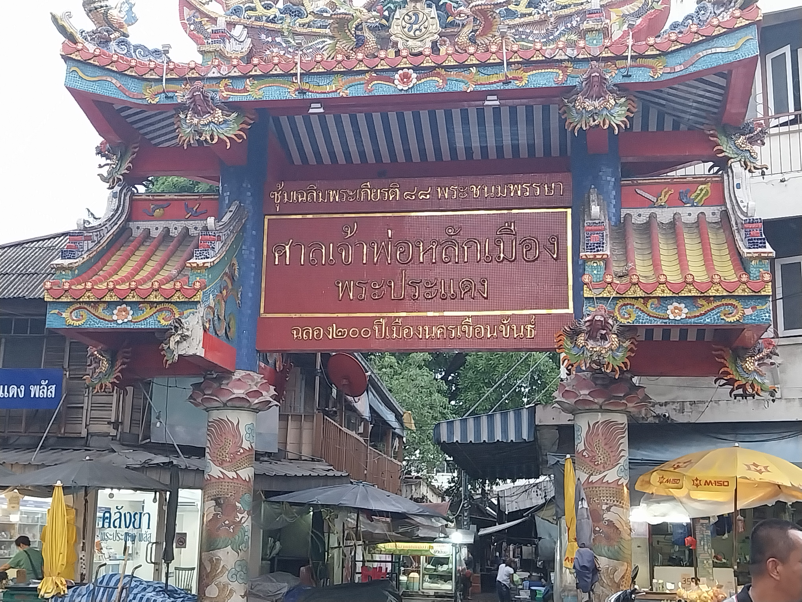
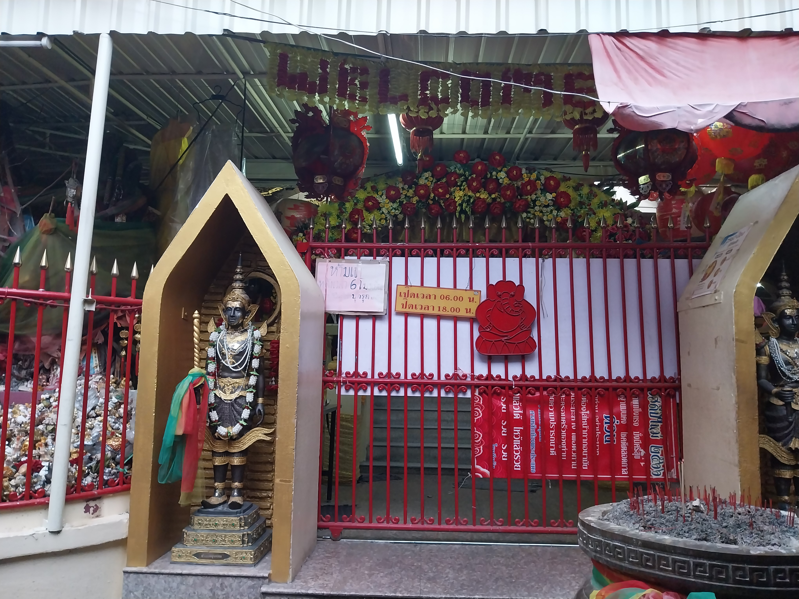

ศาลเจ้าพ่อหลักเมืองพระประแดง
ไหว้ศาลหลักเมืองพระประแดง และจะได้ไหว้พระพิฆเนศ ที่เก่าแก่ที่สุดในประเทศไทย
รูปภาพสถานที่
 ที่ตั้ง
49 ถนน นครเขื่อนขันธ์ ตำบล ตลาด อำเภอพระประแดง สมุทรปราการ 10130 ประเทศไทย
เวลาเปิด-ปิด : เปิดทุกวัน 06:00 น. – 18:00 น.